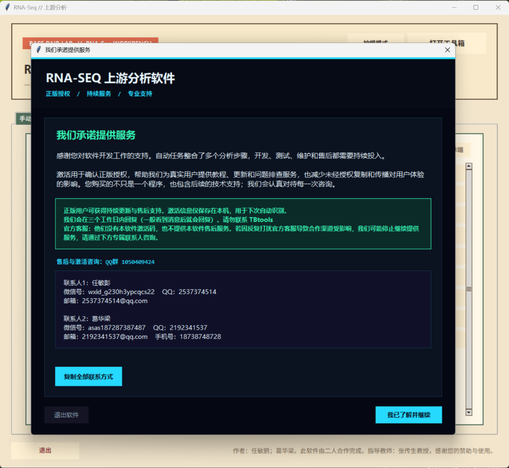
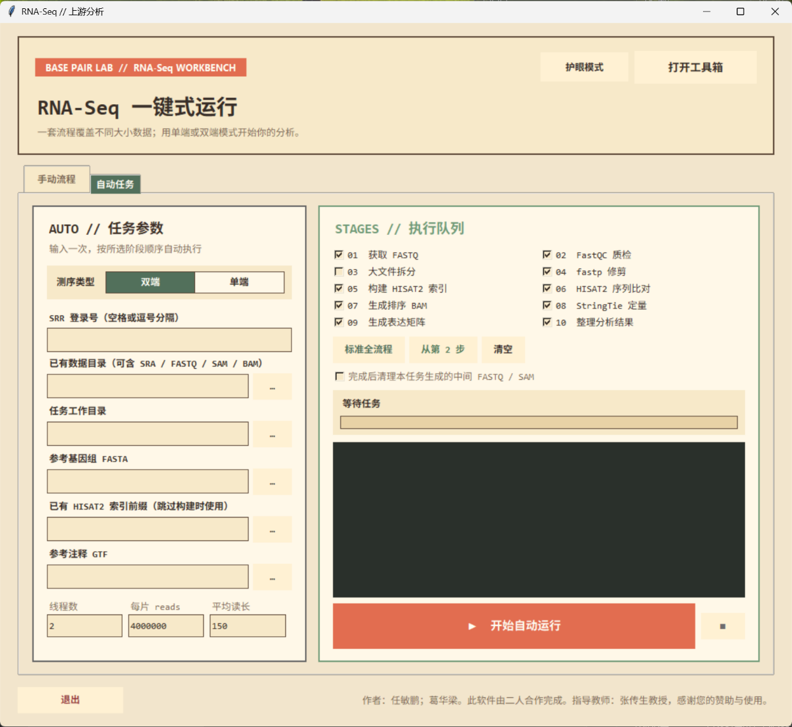
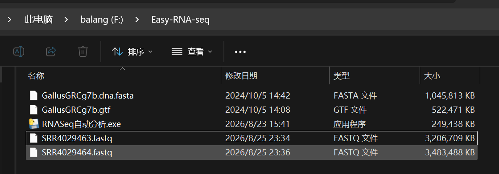
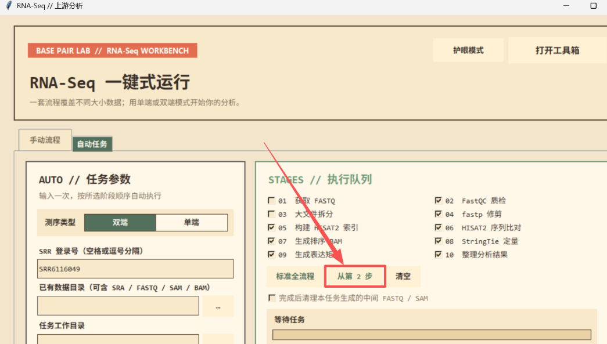
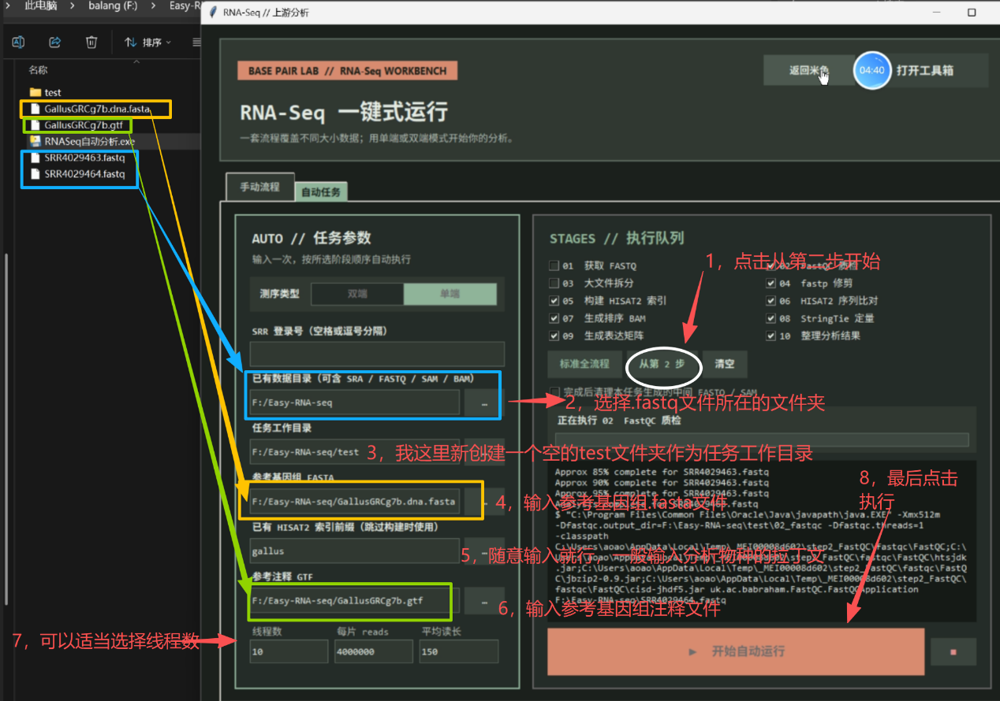
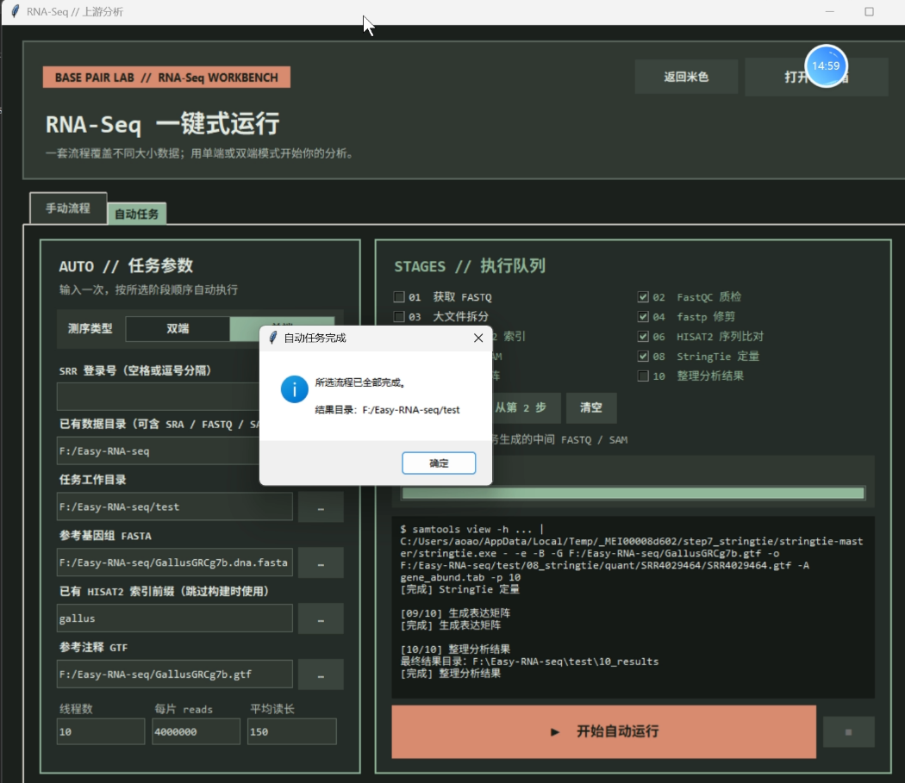
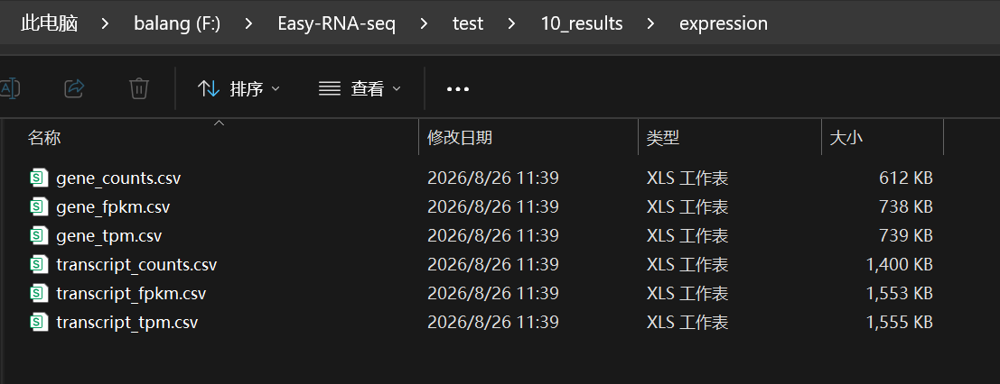
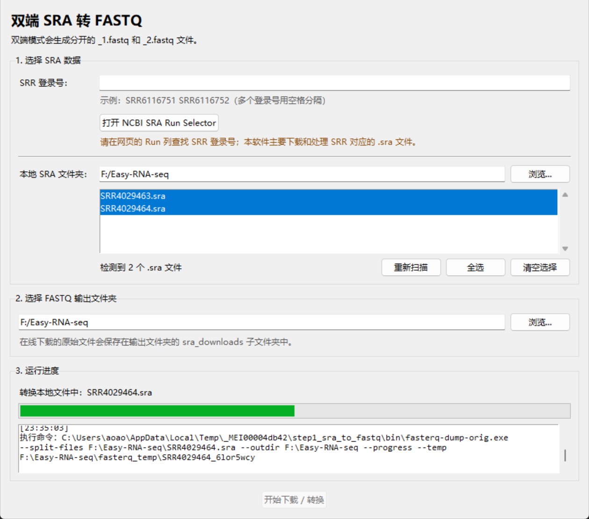
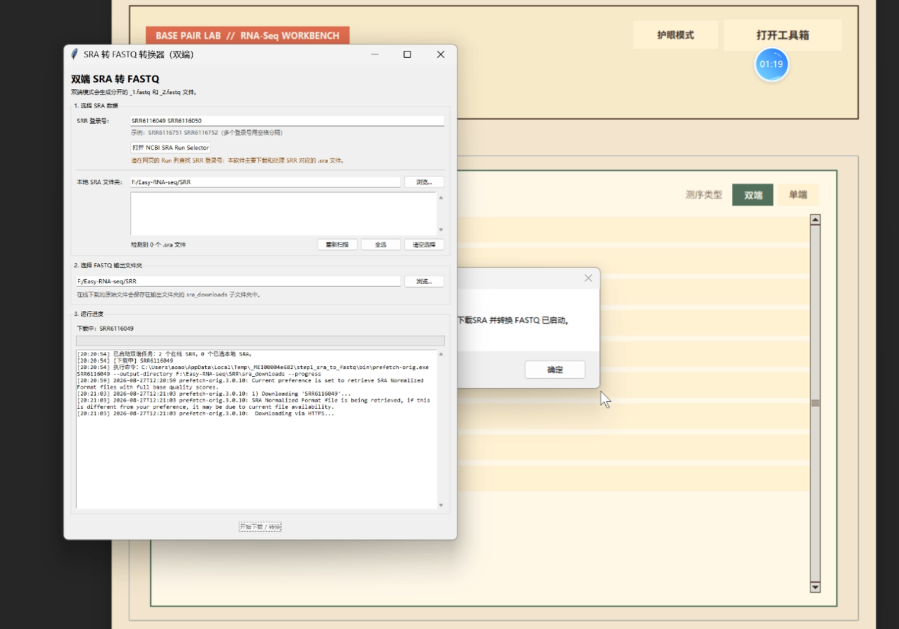

00开始之前（必读）
软件是 Windows 桌面程序，解压即可运行，但下面三条请务必先确认，否则很容易在中途报错。
注意 1｜售后服务：可以加上两位售后老师，并提供 TBtools 购买证明，我们会提供完整的售后服务，不会二次收费。
注意 2｜路径规范：文件运行的路径不要包括中文和特殊符号。推荐形如 F:\Easy-RNA-seq\test。
注意 3｜运行依赖：软件需要提前安装 Java 和 Python，并加入系统环境变量。
01软件界面
双击运行程序后会先弹出服务承诺窗口。窗口里写明了我们的服务范围，也列出了两位联系人与售后 QQ 群。 建议在继续之前，先加上两位联系人或加入售后群，这样后续咨询与排查都能第一时间找到人。
确认信息后点击右下角的 「我已了解并继续」 进入软件主体界面。

软件主界面上方有 「护眼模式」 与 「打开工具箱」 两个按钮：长时间跑任务时可以切换深色界面；工具箱里是手动流程的各个独立功能。
02手动流程参考视频
软件分为 手动流程 与 自动任务 两个页签。本文主要讲解自动任务；如果你想逐步手动执行、或需要单独使用某个功能，可以参考下面两个视频。
03正版服务与售后
软件不含激活码系统，打开即用 —— 不需要机器码，也没有任何验证步骤。我们要做的，只是为使用正版的用户提供服务。
正版凭证：软件著作权登记证书
本软件已取得中华人民共和国国家版权局《计算机软件著作权登记证书》：证书号 软著登字第14916162号，登记号 2025SR0259964，登记日期 2025 年 02 月 14 日，著作权人为开发团队成员。证书上的软件名称是登记时使用的正式名称「基于Python框架的转录组分析软件 V1.0」，也就是本教程所讲的这套 Easy-RNA-seq 程序。
我们承诺提供的服务
- 教程与更新：软件使用教程、版本更新与常见问题都在持续维护。
- 报错排查：跑不通、报错、结果异常，都可以把日志发给我们一起看。
- 使用咨询：参数怎么填、流程怎么选、结果怎么解读，随时来问。
我们承诺提供服务。正版用户可获得持续更新与售后支持，我们会在三个工作日内回复（一般看到消息后就会回复）。
不会二次收费。购买后即获得完整的售后服务，后续不再收取任何费用。
请勿联系 TBtools 官方客服。他们没有本软件，也不提供本软件售后服务。若因反复打扰导致合作渠道受影响，我们可能停止继续提供服务。
04自动任务使用界面
自动任务页签分为左右两块：左侧是 任务参数，右侧是 执行队列。用法很简单 —— 输入一次，按所选阶段顺序自动执行。

参数一览
- 测序类型：双端 / 单端，按数据实际情况选择。
- SRR 登录号：多个登录号用空格或逗号分隔；已有 FASTQ 时可留空。
- 已有数据目录：可包含
SRA/FASTQ/SAM/BAM。 - 任务工作目录：所有阶段结果与中间文件的输出根目录。
- 参考基因组 FASTA：
.fasta/.fa。 - 已有 HISAT2 索引前缀：跳过构建时使用。
- 参考注释 GTF：
.gtf。 - 线程数 / 每片 reads / 平均读长：影响运行速度与资源占用。
05输入三种文件
自动任务需要准备三种文件。以本示例（单端数据）为例，它们放在同一个目录里：

（1）FASTQ 文件
公司一般提供的就是 FASTQ 文件；也可以在网页里自行下载 FASTQ 文件（若下载到的是 SRA，见文末 附注）。 此时在队列里选择「从第 2 步」开始即可，不需要重新下载与转换。
SRR4029463.fastq、SRR4029464.fastqSRR33450369_1.fastq、SRR33450369_2.fastq（2）基因组序列
物种参考基因组序列文件，格式为 .fasta 或 .fa。
（3）基因注释
与基因组配套的注释文件，格式为 .gtf。
如果之前已经用同一套基因组构建过 HISAT2 索引，可以把索引前缀填进「已有 HISAT2 索引前缀」，并取消勾选第 5 步，能省下大量构建时间。
06选择单端或双端
通过选择软件中的单端 / 双端开关，来决定使用哪种模式。模式决定程序如何识别和读取测序文件：
- 双端：读取成对的
_1.fastq与_2.fastq；SRA 转换时也会生成分开的两个文件。 - 单端：一个样品对应一个 FASTQ 文件。

SRR6116049，并点选「从第 2 步」。07逐步操作（标注图）
下图是教程原图，箭头与编号依次对应下面的操作顺序。以「已有 FASTQ」为例：

操作顺序
- 点击「从第 2 步」 —— 跳过下载与转换，直接从质检开始。
- 选择 .fastq 文件所在的文件夹 —— 填入「已有数据目录」。
- 新建一个空文件夹作为任务工作目录 —— 教程示例中新建了空的
test文件夹。 - 输入参考基因组 FASTA 文件 —— 例如
F:\Easy-RNA-seq\GallsusGRCg7b.dna.fasta。 - 填写已有 HISAT2 索引前缀 —— 可随意命名，例如
gallus。 - 输入参考基因组注释文件（GTF） —— 例如
F:\Easy-RNA-seq\GallsusGRCg7b.gtf。 - 适当选择线程数 —— 教程示例填 10。
- 点击「开始自动运行」 —— 程序自动按队列执行，日志区实时回显命令与进度。
再强调一次：上面所有目录都使用纯英文路径。教程里出现过的报错（如 An error occured: SetCurrentDirectory）基本都是路径含中文或特殊符号引起的。
08运行与结果
点击执行后程序会自动化执行，自动得到结果。跑完会弹出提示 「所选流程已全部完成」，并给出结果目录路径。

最终得到表达矩阵
结果位于任务工作目录下的 10_results，表达矩阵在 expression 子目录中，共六张表：

谢谢您的使用和认可！
09附注：SRA 下载并转换 FASTQ
下载到的 sra 文件需要转换成 FASTQ 才能进入分析。做法是：选择手动流程的第一步（Step1 下载 SRA 并转换 FASTQ）， 在窗口里输入样品对应的 SRR 号、选择输出文件夹，程序即可自动下载并转换 —— 速度快慢一般与网速相关。
如果是本地已有的 .sra 文件，仅使用第二个功能即可：直接把 SRA 文件转换成 FASTQ 文件，然后再进行自动化处理。

_1.fastq 与 _2.fastq 文件。使用要点
- 在网页的 Run 列表 查找 SRR 登录号；软件主要下载和处理 SRR 对应的
.sra文件。 - 多个登录号之间用空格分隔，例如
SRR6116751 SRR6116752。 - 本地 SRA 文件夹会自动扫描，可用「重新扫描 / 全选 / 清空选择」管理待处理文件。
- 在线下载的原始文件会保存在输出文件夹的
sra_downloads子文件夹中。

转换完成后，把输出目录填进自动任务的「已有数据目录」，点 「从第 2 步」 即可继续自动化处理。
10视频教程汇总
视频教程可能比文字教程更详细，建议对照着看。
11联系方式与售后
报错排查、使用咨询、版本更新都可以直接联系我们，会提供完整售后服务，不会二次收费。
联系人 1
- 微信号
- wxid_g230h3ypcqcs22
- 2537374514
- 邮箱
- 2537374514@qq.com
联系人 2
- 微信号
- asas187287387487
- 2192341537
- 邮箱
- 2192341537@qq.com
- 手机
- 18738748728